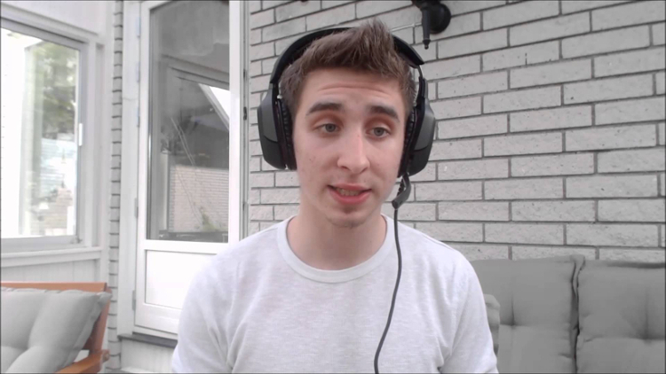
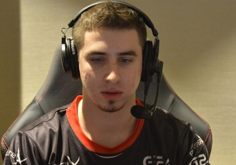
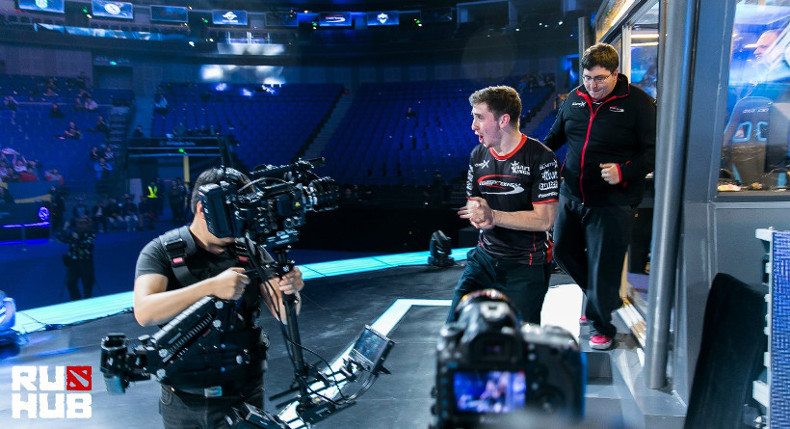

Наши коллеги с сайта inquirer.net подоготовили хороший материал с элементами интервью о подготовке американской команды compLexity к турниру ESL One Manila. Мы перевели его на русский язык и предоставляем вам.
После нескольких матчей в ранкеде и тренировочных игр Кайл 'swindlemelonzz' Фридман встает со своего места и с облегчением вздыхает. Его работа в Dota 2 закончена, и он не может быть счастливее. swindlemelonzz — профессиональный игрок, капитан североамериканской команды по Dota 2 compLexity Gaming. Он встает из своего стула и наконец может размять ноги после нескольких часов работы на компьютере и непрерывных кликов мышью. Сейчас вместе со своей командой он усиленно работает, готовясь к очередному LAN-турниру. ESL One Manila будет проходить на Филиппинах: туда лететь двадцать часов через полмира. Если вы хотите победить лучших в Dota 2, вы должны очень много работать. Что я знаю о Филиппинах? Абсолютно ничего, парень. Ну ладно, там чертовски жарко. Но это действительно все. Подготовка compLexity к турниру сверхсложна. Они играют много тренировочных игр, практикуются «один на один», смотрят реплеи и обсуждают стратегии. Мы также должны хорошо питаться, хорошо спать и поддерживать моральный дух. Мы много тренировались с Evil Geniuses и Team Secret, также играли с Elite Wolves и Team Shazam. Еще собирались сыграть с Digital Chaos. Но в целом чувствуем себя уверенно.
Менеджер команды Кайл 'Beef' Баутиста внимательно следит за успехами команды в игровом доме coL во Флориде. Beef заботится о том, чтобы игроки были сосредоточены во время подготовки и игры. Слишком уж много отвлекающих факторов может повлиять на молодых профессионалов. Evil Geniuses на этот турнир в Манилу не едут. Но swindlemelonzz убежден, что после трансфера двух ярких игроков «злые гении» стали едва ли не сильнее. Он считает, что после этого легче его команде на американской сцене не стало, и уверен, что compLexity еще нужно много работать. Если ты не будешь трудиться, ничего хорошего не выйдет. Посмотрите на китайскую сцену сейчас. Сравните их с западными игроками. Клемент 'Puppey' Иванов всегда старается найти лучших игроков себе в команду. Тоже самое делают KuroKy и ppd. И обратите внимание на xiao8: он уходит в отпуск и возвращается, когда хочет. rotk меня просто поражает: ужасно неэффективный игрок с высоким самомнением, и до сих пор вокруг него собирают молодых талантов. Посмотрите на чемпионов The International 4 NewBee: после триумфа они просто перестали заботиться об игре. Черт, да они же проиграли перуанцам во Франкфурте! Думаю, этим все сказано. На ESL compLexity попали в одну группу с Team Liquid, Wings Gaming и Mineski. Кайл считает, что группа неплохая: у китайцев американская команда выигрывала на SLTV в Минске, Mineski были биты на MDL. Даже Team Liquid капитану compLexity кажется не таким непроходимым соперником. Две команды попадают в полуфинал, и swindlemelonzz надеется даже одолеть Secret.
Завтра для Кайла Фридмана будет новый день. Он сыграет еще больше матчей в игру, которая стала работой. Он проведет еще больше часов, пытаясь понять ее нюансы и сложности. compLexity, как любая другая команда собирается на LAN с мечтами о победе и призовых. А после, возможно, ребята пойдут пробовать традиционную филиппинскую кухню.